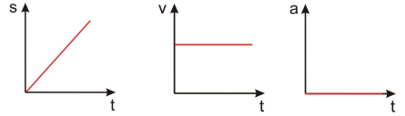
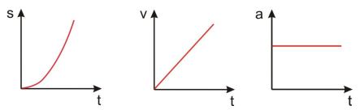
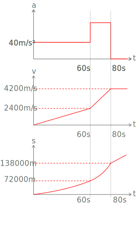
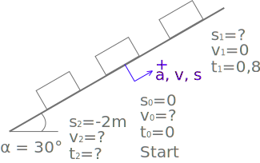

Dynamik ― Kinematik und Kinetik
1. Kinematik
Die Kinematik beschreibt Bewegungsvorgänge, ohne Berücksichtigung der Kräfte
reine
Bewegungsgeometrie.
Es gilt das Superpositionsgesetz: Jede Bewegung eines Körpers/Massenpunktes lässt sich
durch Translation/Rotation
darstellen.
Translation: Alle Punkte eines Körpers bewegen sich auf kongruenten Bahnen.
Rotation: Alle Punkte bewegen sich auf konzentrischen Kreisbahnen (mit derselben Drehachse).
In der Ebene sind 2 Transaltionen und 1 Rotation möglich. Zum Beispiel lässt sich ein Blatt Papier in der Ebene
nur in 2 Achsrichtungen verschieben und um eine Achse drehen das System
besitzt 3 Freiheitsgrade (2 Translationen + 1 Rotation).
Im Raum hingegen existieren 6 Freiheitsgrade (3 Translationen + 3 Rotationen).
1.1 Bewegungsgrößen ― Weg, Geschwindigkeit, Beschleunigung, Zeit

1.2 gleichförmig, geradlinige Bewegung
Die Geschwindigkeit ist hier konstant:

1.3 gleichförmig, beschleunigte Bewegung
Die Beschleunigung ist hier konstant:

1.3.1 Beispiel 1
geg.:ges.:
1.3.2 Beispiel 2
geg.:1. Phase: (Start) Beschleunigung für bis :
:
2. Phase: :
3. Phase: ges.: a) Höhe nach 1. Phase
Geschwindigkeit nach 1. Phase (zu diesem Zeitpunkt)
b) Höhe nach 2. Phase
Geschwindigkeit für
Gesetz für (für 3. Phase)
c) Diagramme , ,
a)
b)
3. Phase:
c) Diagramme

1.5.3 Schiefe Ebene
geg.: AB: AB: nach
1.4 schräger Wurf
Auch hier gilt das Superpositionsgesetz. Deshalb kann der Wurf in 2 Bewegungen (Translationen) aufgeteilt werden.
1.5 kreisförmige Bewegung
Diese Bewegung kann als Sonderform der allgemeinen Bewegung angesehen werden.
2. Kinetik
Die Kinetik berücksichtigt die Kräfte und den sich daraus ergebenden Bewegungen.
Bei reinen translatorischen Bewegungen führen alle Punkte eines Körpers die gleiche Bewegung aus. Somit kann der
gesamte Körper in einem Punkt gedacht werden Massenpunkt
Im Gegensatz zur Statik sind die dynamischen Grundgleichungen nicht 0.
2.1 Newton'sche Bewegungsgleichungen
Im Vergleich: